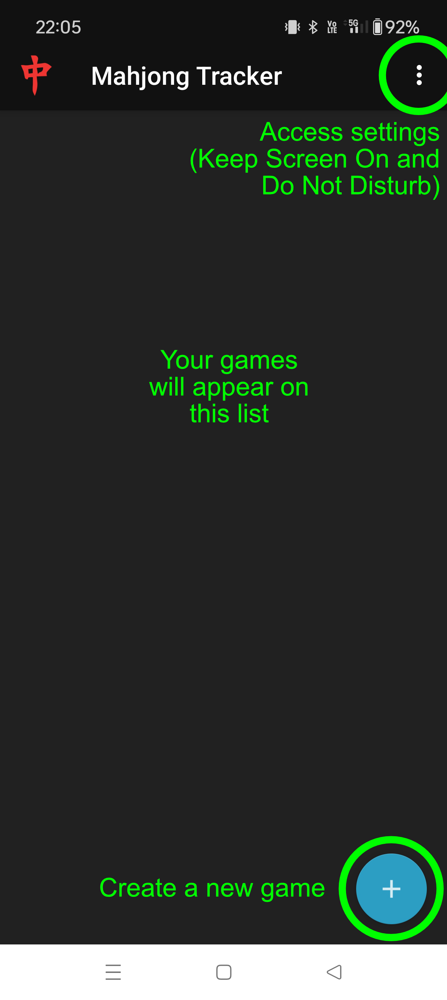
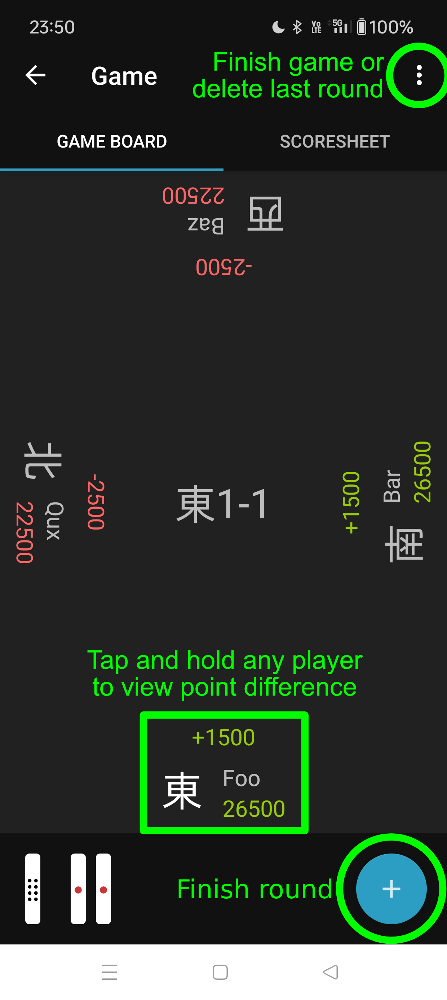
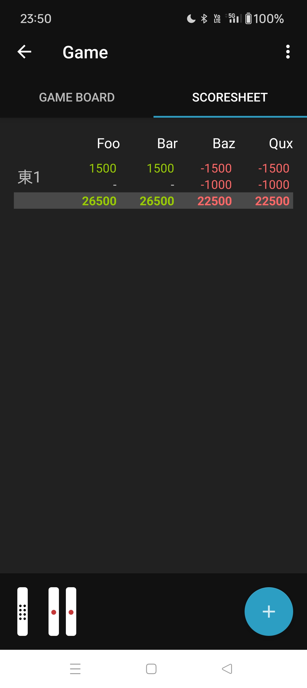

Mahjong Tracker manual
Installation and setup
- Download the app on your Android device by searching for MAHJONG TRACKER or by following
this link
- On the first run, you will be required to log in or register a new account
Settings
The application has two settings:
- Keep screen on during game
- Do Not Disturb Mode
It is highly recommended to enable both. Do Not Disturb Mode will prevent notification banners from popping
up
where
other players can see them.
Games view

Game view
The game view is divided into two parts.
Game board

Scoresheet

Finishing the round
Tap the "+" button in the Game view. You will be presented with a menu with the following options:
Tsumo
- choose TSUMO
- tap the player who won
- enter han and fu values
- tap the "checkmark" button
- tap all players that declared riichi
- tap the "submit" button
Ron
- choose RON
- tap the player who lost
- for each player who won:
- tap the player who won
- enter han and fu values
- tap the "checkmark" button
- tap all players that declared riichi
- tap the "submit" button
Abortive draw
- choose RYUUKYOKU
- tap all players that were in tenpai
- tap the "checkmark" button
- tap all players that declared riichi
- tap the "submit" button
Chombo
- choose CHONBO
- tap the player who committed chombo
- tap the "submit" button
Yakuman
When a player gets a yakuman:
- follow the directions for RON or TSUMO
- in the han and fu values dialog, check "Yakuman" (don't change the yakuman count)
- tap the player that was liable for the yakuman, if applies (sekinin barai). Tap the player who won to
undo
- follow the rest of directions for RON or TSUMO
Finishing the game
Access the main menu and tap "Finish game". A confirmation dialog will pop up.
Good luck and have fun!